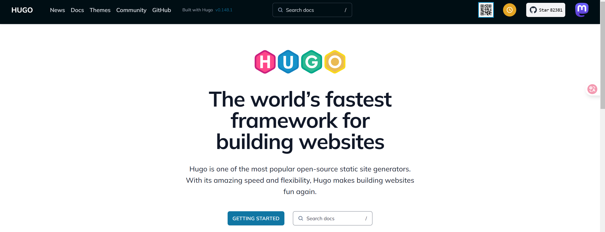
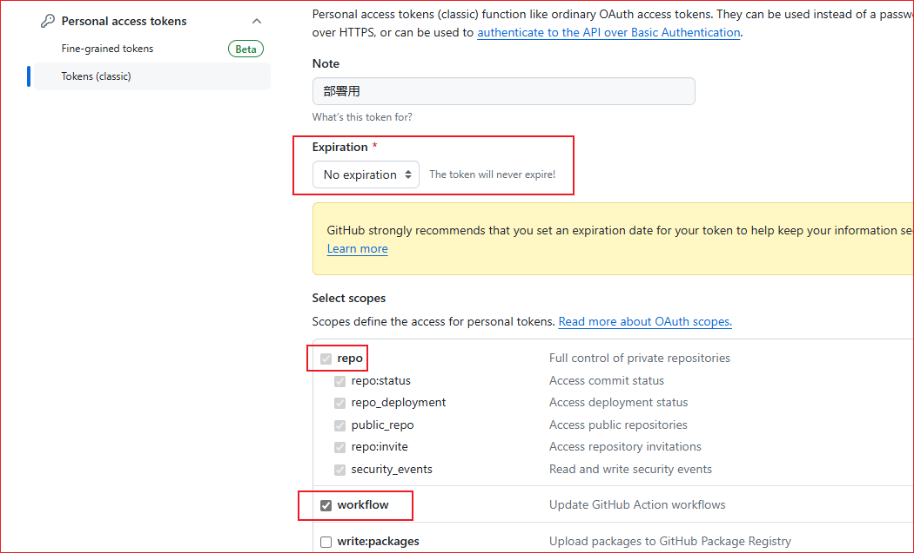

【教程】Hugo + Github免费搭建博客
Hugo博客搭建
下载Hugo
Hugo官方网站 点我跳转
点击导航栏Github跳转到Hugo的Github开源仓库，或者直接点击此处跳转
点击Tags选择合适版本后下载对应系统的压缩包，本教程以编写时最新版本0.148.1为例，下载的包名为hugo_extended_0.148.1_windows-amd64.zip
解压后得到如图所示文件
这样，我们的Hugo就下载好了！
启动Hugo
在Hugo目录下启动命令提示符/Powershell，执行以下命令
|
|
这会在目录下创建一个文件夹，里面存放了你的博客网站的一些配置与文件，另外，在命令提示符中还出现了让我们感兴趣的步骤，通过这些步骤，我们就可以完成自己的博客页搭建了！
下载与安装主题
如果你迫不及待的想要看一看自己的网站，我们直接跳到第5步，使用
|
|
你会看到如下结果
熟悉前端开发的一定对http://localhost:1313不陌生，直接在浏览器中打开这个网址就可以看到我们的网站啦！然而，不出意外，我们看到的都是Page Not Found 字样，不要怕，这是是因为我们还没有安装主题！让我们回到第2步。
跳转到第二步的网页，或者在Hugo官网导航栏点击Themes。 点此跳转
选择你喜欢的主题进行下载并解压到<Your Folder Name>/themes下。这里我们使用stack主题为例。
接下来，第3步，Hugo要求我们更改hugo.toml配置文件，在里面添加theme属性，其值为主题名称（即对应主题的文件夹名称）。
themes下我的主题文件夹名为stack，所以我们在hugo.toml里添加一行配置。
|
|
全部完成后，让我们再一次使用第5步，打开我们的网站，就会发现我们的网页有了一些内容！
写我的第一篇博客
我们的网站已经初具雏形，是时候写一篇文章试试手啦！
按照第4步，使用如下命令
|
|
这里为演示，我创建了post/my-first-post.md，hugo会在<Your Folder Name>下建立新的文件，如你所写，我们可以在文件资源管理器中找到并对其做一些修改。
最后，让我们再次运行第5步，看一看最终的效果怎么样吧！
可以看到，我们已经添加了一条新的博客，并且可以阅读其详细内容啦！
主题配置
有些朋友可能会问，为什么我的页面看起来那么草率，一点也不华丽。别急，因为我们没告诉它要长什么样子，它索性就什么也不展示。那要如何告诉主题展示其他的控件呢？还记得我们配置文件嘛，我们需要更改配置文件来告诉主题。我们还是以stack主题为例。
关于Hugo支持哪些配置以及配置的最全解释，可以参阅Hugo的config文档，点此跳转
幸运的是，stack的作者在源码文件夹里为我们提供了网站demo，其中包含作者已经准备好的配置文件，问哦们可以直接拿来用。
值得注意的是，作者使用的是yaml格式的配置文件，而我们使用的是toml格式，我们需要对其进行转换。因为Hugo支持多种配置文件格式，直接将作者使用的替换掉我们的并做一些修改也是可以的。
这里选用第二种方式。部分配置如下（为避免出现不必要的问题，请不要直接复制粘贴这里的代码）：
|
|
这里选择几个解释一下，关于其他的更复杂的配置可以在将来有需要时查看文档进行进一步设置。
title 网站标题
copyright 版权标识
DefaultContentLanguage 网站默认语言，注意，若使用简体中文zh-cn需要将hasCJKLanguage配置为true
pagerSize 每页展示的文章数量
social 社交快捷标识
替换好后，我们看一看新的界面。这时我们的页面是不是就不像之前那么单调了呢！
Github常规部署
经过上面的步骤，我们已经有了自己的博客网站，但是这些页面只能在本地查看，能不能分享在网络上，让其他人也可以看到自己的博客呢？答案是肯定的！我们可以借助Github的静态网页托管进行。
使用命令
|
|
hugo会自动“编译”当前的所有东西，并将结果输出到public路径下，我们只需要将该路径下的所有文件上传到Github仓库中，使用其免费的静态界面部署即可。注意：记得更改配置文件中的baseUrl哦！
关于Github的静态网页托管，请参阅Github Pages或者跟着接下来的步骤进行简单的操作。
Step 1 新建一个仓库
登录Github，点击右上角的+号，选择New repository
输入仓库名称，选择Public，点击Create repository
Github的每一个账户都有一个站点与无限个项目站点，一般而言，账户名对应的站点为https://<username>.github.io，项目站点为https://<username>.github.io/<projectname>。自己的个人博客一般选用账户站点，对应账户站点的仓库名应为<username>.github.io，输入仓库名，点击Create repository。看到下面的界面时说明你成功建立了自己的仓库。
Step 2 上传文件
在仓库页面，点击Upload files，选择public路径下的所有文件，点击Add files，输入文件名，点击Commit changes。
如果你使用git命令工具的话，也可以使用以下命令或者页面提示的命令上传文件：
|
|
Step 3 配置Github Pages
在仓库页面，点击Settings，选择Pages，Branch将None选为main分支，点击Save。
Step 4 查看效果
等待一段时间，刷新页面，当看到如下界面时，恭喜你，成功将自己的博客静态界面托管到了Github上，通过Visit Site即可成功访问啦。
Github自动部署
现在我们已经初步有了自己的个人博客网站啦！但是每次进行修改后，都需要手动进行“编译”和上传，这是一个比较繁琐的过程。有没有什么办法可以自动进行编译和上传呢？答案是肯定的！我们可以使用Github Actions来实现。
通过下面的步骤，我们可以实现自动编译和上传。
Step 1 创建新的 Github 仓库
首先，我们需要再次创建一个新的仓库，用于存放我们的主文件。
Step 2 设置 Github Actions
创建完后，先不着急上传文件。
在Github个人的Settings -> Developer Settings -> Personal access tokens中点击Generate new token创建一个新的token(classic)，注意保存好该token，后续会使用到。
token选择永不过期，并勾选 repo 和 workflow 选项。

注意，生成的Token只能查看一次，请注意将其复制保存到合适的位置！
之后在，刚刚创建的新仓库中，进入仓库的Settings -> Secrets and variables -> Actions，点击New repository secret，命名秘密变量名名称以及其值。
Step 3 创建工作流
在<Your Folder Name>路径下创建一个.github/workflows目录，在该目录下创建一个hugo.yml文件，内容如下：
|
|
注意更改PERSONAL_TOKEN为你刚刚创建的token变量名以及EXTERNAL_REPOSITORY为你的仓库名称。
我们暂时不需要了解这做了什么。如果你感兴趣，欢迎参阅【Github Actions】。
Step 4 上传文件
在正式上传文件之前，我们需要在<Your Folder Name>下新建一个.gitignore文件，避免上传一些不必要的文件。
在.gitignore文件中，添加以下内容：
|
|
之后将<Your Folder Name>路径下的所有文件上传到新的仓库中。
每次当你将提交推送到main分支时，Github Actions就会自动触发，进行“编译”和上传。从而实现自动托管。
通过上面的步骤，恭喜你，拥有了完全属于自己的个人博客页，接下来尽情发挥你的创意，享受无限可能吧！